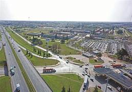

Quienes somos?
LOS PRIMEROS AÑOS DE FORD EN ARGENTINA

A sólo 10 años de fundar Ford Motor Company en los Estados Unidos, Henry Ford tomó la decisión estratégica de desembarcar con su proyecto con una planta de ensamblaje en el barrio porteño de La Boca en 1913. La filial de Ford Motor Company en nuestro país fue la tercera en establecerse a nivel mundial –después de Canadá e Inglaterra– y la primera en Sudamérica. Además, Ford fue la primera automotriz en radicarse en nuestro país. Desde entonces, Ford Argentina mantiene una posición importante en la estrategia de negocio de Ford a nivel global.
En 1917, en la planta de La Boca, comenzó el armado experimental de las unidades Ford “T”, el modelo producido con la línea de montaje móvil, una innovación que dio origen a un nuevo sistema de producción: el fordismo, que se constituyó como el nuevo paradigma de la producción industrial del siglo XX, en tanto permitía producir más unidades de mayor calidad, en menos tiempo, disminuyendo los costos, aumentando las ventas, mejorando los beneficios para los operarios y aumentando el empleo. Para 1920, 8 de cada 9 automóviles que se vendían, eran modelos Ford “T” y seis años más tarde Ford Argentina ya contaba con 1500 empleados, 2400 talleres exclusivos en todo el país y más de 285 concesionarios.
Tras un proceso de expansión sostenida, la Planta de La Boca supo ensamblar distintos modelos Ford: desde el Ford “T” se pasó al Ford “A”, se incorporaron también los modelos de cilindros en V, así como también los camiones F-500, F-600 y F-900. Hacia 1959, y con la visita de Henry Ford II, se presenta la Pick-Up F-100, se constituye Ford Argentina S.C.A y se aprueban las inversiones para dar inicio a la construcción de Planta Pacheco.
Fabrica de Pacheco

El nuevo centro industrial demandó una inversión de 70 millones de dólares en 1960: la mayor inversión en ese rubro que Ford había hecho hasta entonces fuera de los Estados Unidos. Ubicada a 38 kilómetros al norte del centro de Buenos Aires, la fábrica de vehículos y motores se levantó en un predio de 105 hectáreas que fue el epicentro de la transformación de la comunidad local. La inversión no solo trajo nuevos vehículos, sino el establecimiento de nuevos servicios y proveedores, lo que constituyó a General Pacheco en un polo industrial y urbanizado en desarrollo creciente.
En su más de medio siglo de existencia, Planta Pacheco ha visto salir de sus líneas de producción modelos que han quedado en la memoria de los argentinos: el Falcon, el Fairlane, el Taunus, la F-100, el Sierra, el Escort y el vehículo global más reciente, equipado con tecnología innovadora e inteligente, puesto a disposición de los clientes argentinos desde las versiones de entrada: la Nueva Ranger. Hoy, con una superficie de 1.050.000 m2, el predio alberga las plantas de estampado, carrocería, armado, pintura, motores, repuestos, una pista de pruebas de 700 metros de longitud, edificios de administración; todas instalaciones certificadas a nivel ISO a la calidad de procesos y cuidado del medioambiente.
La implementación de la estrategia One Ford se materializó a partir del 2011 con un fuerte ciclo de inversiones para modernizar Planta Pacheco y fabricar allí La Nueva Ranger para abastecer a toda la región. Además, esta estrategia de productos globales da cuenta del compromiso de Ford hacia sus clientes argentinos, en la medida que ofrece un catálogo de productos globales equipados con tecnologías inteligentes y avanzadas en materia de seguridad, conectividad y eficiencia de consumo, en todos los segmentos.
Ford Argentina está comprometida en proveer a sus clientes con productos eficientes e inteligentes, equipados con las tecnologías más avanzadas para ofrecer una experiencia de manejo confiable y segura. A lo largo de su más de un siglo de presencia ininterrumpida en nuestro país, Ford Argentina mantiene una fuerte vínculo con la sociedad local, siendo un contribuyente clave para su desarrollo, invirtiendo y apostando al desarrollo de la industria local, ofreciendo trabajo de calidad y a través de sus programas de relaciones con la comunidad. Tan solo en el periodo de 2011 a 2017, Ford ha invertido USD 770 millones para sus operaciones en Argentina, para la renovación de las plataformas globales fabricadas localmente y la modernización de su planta productiva de General Pacheco, además de un significativo plan de desarrollo de piezas locales junto a proveedores de autopartes.